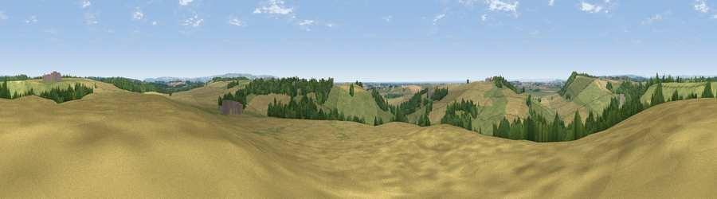

Viewpoint near Bulmer
#17669 in England · top 35% of its area beats it · near Bulmer · path 185 mWhere it is
The exact computed spot (SE 69425 68375). Click the marker for map links.
Public access: the nearest public right of way is about 185 m away — the final stretch may cross private land. Computed from Natural England's CRoW access layer and OpenStreetMap rights of way — not the legal definitive map. Always verify locally.
The view, rendered

A 360° render of this exact spot computed from the terrain model, tree cover and land cover — summer colours, afternoon light, calibrated against photographs of famous viewpoints. Real trees, hedges and buildings will differ in detail.
The panorama
Grey silhouette: terrain skyline in each direction (720 bearings, Earth curvature and refraction included). Dashed green: skyline with trees (+15 m) and buildings (+8 m) as obstacles. Blue strip: how far the ground is visible on each bearing.
Where the view opens
Wedge length = distance to the farthest visible ground on that bearing (vegetation-aware). Rings at 10, 25 and 50 km.
What fills the view
50% cropland · 38% grassland · 12% woodland ·
Angular shares of the visible panorama (visual magnitude), not map area. Landscape diversity 0.44 (0–1 Shannon).
Key numbers
More beautiful places nearby
The staircase of upgrades: each row has a higher view potential than everything closer. Driving times are estimates from straight-line distance, calibrated against real road routing — check an actual route before setting out.
| Place | Direction | Drive | Score |
|---|---|---|---|
| Viewpoint near Bulmer | S · 1 km | ~3 min | 55.8 |
| Viewpoint near Bulmer | SE · 2 km | ~4 min | 60.8 |
| Viewpoint near Terrington | WNW · 2 km | ~5 min | 65.8 |
| Viewpoint near Terrington | NW · 4 km | ~10 min | 70.4 |
| Viewpoint near Brandsby | WNW · 10 km | ~20 min | 71.8 |
| Viewpoint near Leavening | ESE · 12 km | ~22 min | 73.7 |
| Viewpoint near Acklam | SE · 13 km | ~24 min | 73.8 |
| Viewpoint near Ampleforth | NW · 14 km | ~26 min | 76.6 |
54.10658, -0.93967 · source: screening · position refined by local search. Computed location — check access rights before visiting.